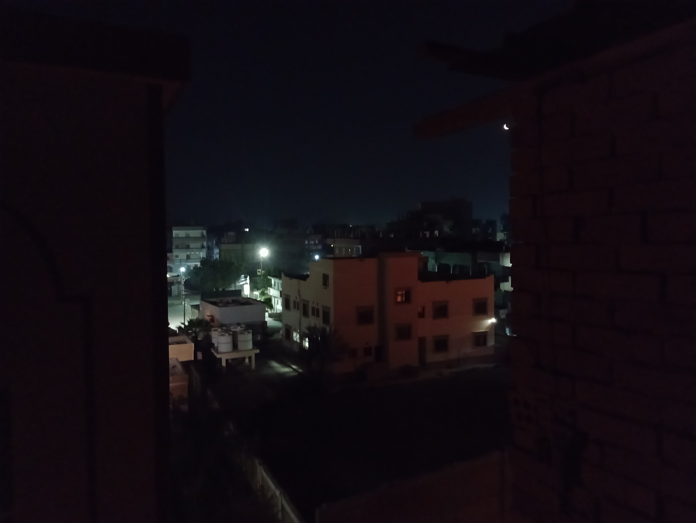
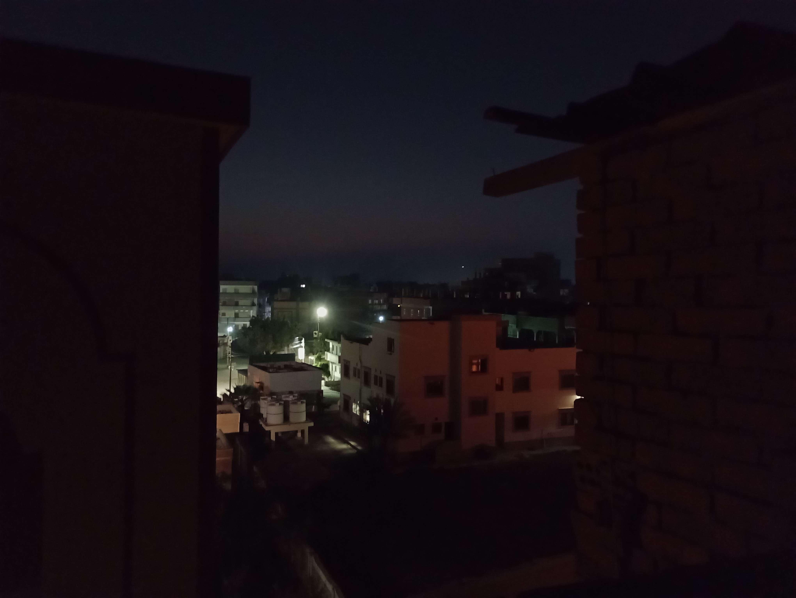
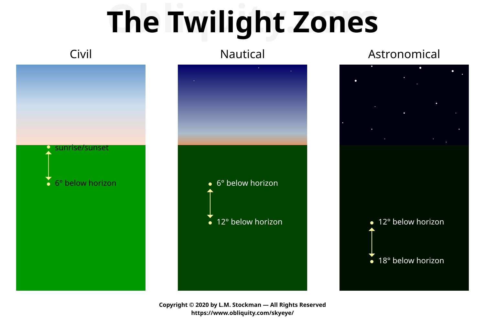
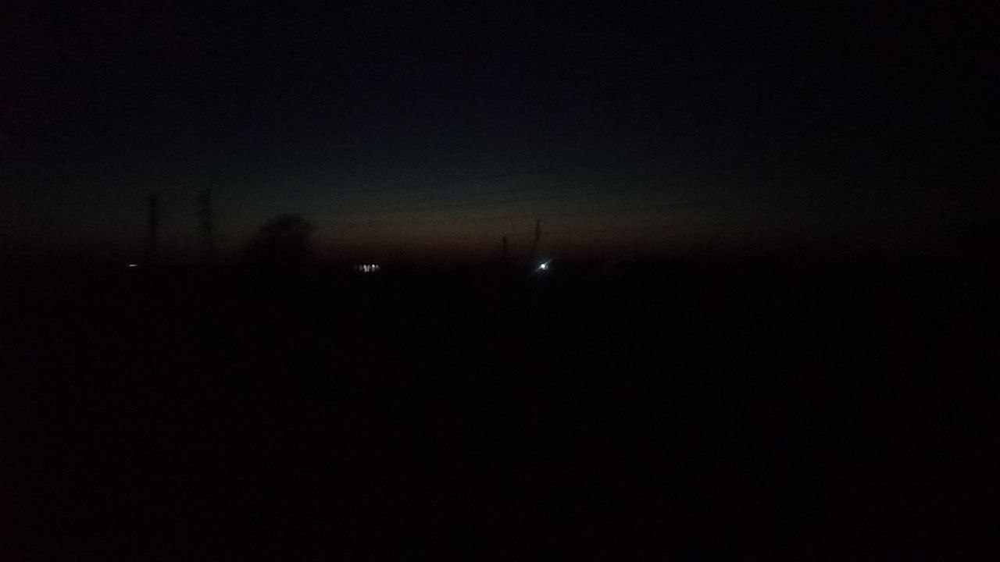

link_2بعض ما جاء في كتمان العلم
👈 قال الله عز وجل:
{ إِنَّ الَّذِينَ يَكْتُمُونَ مَا أَنزَلْنَا مِنَ الْبَيِّنَاتِ وَالْهُدَىٰ مِن بَعْدِ مَا بَيَّنَّاهُ لِلنَّاسِ فِي الْكِتَابِ أُولَٰئِكَ يَلْعَنُهُمُ اللَّهُ وَيَلْعَنُهُمُ اللَّاعِنُونَ } [ سورة البقرة : 159 ]
👈 وقال جل جلاله:
{ وَإِذْ أَخَذَ اللَّهُ مِيثَاقَ الَّذِينَ أُوتُوا الْكِتَابَ لَتُبَيِّنُنَّهُ لِلنَّاسِ وَلَا تَكْتُمُونَهُ فَنَبَذُوهُ وَرَاءَ ظُهُورِهِمْ وَاشْتَرَوْا بِهِ ثَمَنًا قَلِيلًا فَبِئْسَ مَا يَشْتَرُونَ } [ سورة آل عمران : 187 ]
👈 وقال الطبري في تفسيره:
2377- حدثني محمد بن عبد الله بن عبد الحكم قال، حدثنا أبو زرعة وَهْب الله بن راشد، عن يونس قال، قال ابن شهاب, قال ابن المسيب:
قال أبو هريرة:
لولا آيتان أنزلهما الله في كتابه ما حدَّثت شيئًا: إِنَّ الَّذِينَ يَكْتُمُونَ مَا أَنْزَلْنَا مِنَ الْبَيِّنَاتِ إلى آخر الآية، والآية الأخرى: وَإِذْ أَخَذَ اللَّهُ مِيثَاقَ الَّذِينَ أُوتُوا الْكِتَابَ لَتُبَيِّنُنَّهُ لِلنَّاسِ إلى آخر الآية [ سورة آل عمران: 187 ].
link_2وجوب طاعة الرسول ﷺ
👈 قال جل جلاله:
﴿ وَمَا كَانَ لِمُؤْمِنٍ وَلَا مُؤْمِنَةٍ إِذَا قَضَى اللَّهُ وَرَسُولُهُ أَمْرًا أَن يَكُونَ لَهُمُ الْخِيَرَةُ مِنْ أَمْرِهِمْ وَمَن يَعْصِ اللَّهَ وَرَسُولَهُ فَقَدْ ضَلَّ ضَلَالًا مُّبِينًا ﴾ [ سورة الأحزاب : 36 ]
👈 وقال البخاري في صحيحه:
[ باب الاِقْتِدَاءِ بِسُنَنِ رَسُولِ اللَّهِ صلى الله عليه وسلم ]
7280 - حَدَّثَنَا مُحَمَّدُ بْنُ سِنَانٍ، حَدَّثَنَا فُلَيْحٌ، حَدَّثَنَا هِلاَلُ بْنُ عَلِيٍّ، عَنْ عَطَاءِ بْنِ يَسَارٍ،
عَنْ أَبِي هُرَيْرَةَ، أَنَّ رَسُولَ اللَّهِ صلى الله عليه وسلم قَالَ:
" كُلُّ أُمَّتِي يَدْخُلُونَ الْجَنَّةَ، إِلاَّ مَنْ أَبَى "
قَالُوا: يَا رَسُولَ اللَّهِ وَمَنْ يَأْبَى
قَالَ: " مَنْ أَطَاعَنِي دَخَلَ الْجَنَّةَ، وَمَنْ عَصَانِي فَقَدْ أَبَى ".
link_2إخبار الرسول ﷺ بأنه سيحصل إختلاف كثير بعده، وأمره بالتزام سنته وسنة أصحابه رضي الله عنهم أجمعين.
👈 عن رسول الله ﷺ أنه قال:
{ أُوصِيكُمْ بِتَقْوَى اللَّهِ وَالسَّمْعِ وَالطَّاعَةِ وَإِنْ عَبْدٌ حَبَشِيٌّ فَإِنَّهُ مَنْ يَعِشْ مِنْكُمْ يَرَى اخْتِلاَفًا كَثِيرًا وَإِيَّاكُمْ وَمُحْدَثَاتِ الأُمُورِ فَإِنَّهَا ضَلاَلَةٌ فَمَنْ أَدْرَكَ ذَلِكَ مِنْكُمْ فَعَلَيْهِ بِسُنَّتِي وَسُنَّةِ الْخُلَفَاءِ الرَّاشِدِينَ الْمَهْدِيِّينَ عَضُّوا عَلَيْهَا بِالنَّوَاجِذِ } [ جامع الترمذي : 2676 ]
link_2بيان وقت الفجر الصادق، وهو وقت صلاة الفجر ووقت الإمساك عن الطعام والشراب للصائم.
👈 قال أبو عيسى الترمذي في ( جامعه):
[ باب مَا جَاءَ فِي بَيَانِ الْفَجْرِ ]
– حَدَّثَنَا هَنَّادٌ حَدَّثَنَا مُلاَزِمُ بْنُ عَمْرٍو حَدَّثَنِي عَبْدُ اللَّهِ بْنُ النُّعْمَانِ
عَنْ قَيْسِ بْنِ طَلْقٍ حَدَّثَنِي أَبِي طَلْقُ بْنُ عَلِيٍّ
أَنَّ رَسُولَ اللَّهِ ﷺ قَالَ:
{ كُلُوا وَاشْرَبُوا وَلاَ يَهِيدَنَّكُمُ السَّاطِعُ الْمُصْعِدُ وَكُلُوا وَاشْرَبُوا حَتَّى يَعْتَرِضَ لَكُمُ الأَحْمَرُ }.
قَالَ: وَفِي الْبَابِ عَنْ عَدِيِّ بْنِ حَاتِمٍ وَأَبِي ذَرٍّ وَسَمُرَةَ.
قَالَ أَبُو عِيسَى: حَدِيثُ طَلْقِ بْنِ عَلِيٍّ حَدِيثٌ حَسَنٌ غَرِيبٌ مِنْ هَذَا الْوَجْهِ
وَالْعَمَلُ عَلَى هَذَا عِنْدَ أَهْلِ الْعِلْمِ أَنَّهُ لاَ يَحْرُمُ عَلَى الصَّائِمِ الأَكْلُ وَالشُّرْبُ حَتَّى يَكُونَ الْفَجْرُ الأَحْمَرُ الْمُعْتَرِضُ وَبِهِ يَقُولُ عَامَّةُ أَهْلِ الْعِلْمِ. اهـ
👈 ماذا فهمنا من هذا الباب ؟
💡 فهمنا أن وقت الفجر ووقت بداية الصوم يبدأ عندما يعترض لون أحمر في السماء، وهو الفجر الصادق؛ إذا قبل أن يكون هناك لون أحمر معترض في السماء لا يحرم على الصائم الطعام والشراب، ولا يجوز أن يصلي أحد الفجر لأنه لم يأت وقت الفجر بعد.
👈 قال ابن المنذر في 📕 الإشراف:
256 - ثبت أن رسول الله ﷺ صلى الفجر حين طلع الفجر.
359 - وأجمع أهل العلم أن أول وقت صلاة الصبح طلوع الفجر.
360 - وأجمع أهل العلم على أن من صلى الصبح بعد طلوع الفجر قبل طلوع الشمس أنه مصليها في وقتها.
👈 وقال إسحاق بن راهوية: لا يجوز أبدا في عذر أو غير عذر أن يصلي قبل طلوع الفجر, وكذلك المغرب قبل غروب الشمس.
- 📕 مسائل الإمامين أحمد بن حنبل وإسحاق بن راهوية برواية إسحاق بن منصور المروزي.
link_2بيان أن أغلب المساجد ( على الأقل عندنا ) تصلي الفجر قبل وقته أي قبل اللون الأحمر المعترض في السماء.
هذه الصورة للسماء بعد إقامة أغلب المساجد عندنا.
كانت الساعة 04:51AM.

وهذا الفيديو لآخر مسجد يقيم تقريبا، هل وقت الفجر قد دخل بعد ؟ هل ترى لونا أحمرا متعرضا في السماء ؟
لا ليس هناك لون أحمر معترض في السماء؛ إذا وقت الفجر لم يأت بعد؛ وأغلب الناس قد صلت الفجر قبل وقته
كانت الساعة 04:54AM
أما هذه الصورة فهي في وقت الفجر، وتستطيع أن ترى اللون الأحمر المعترض في السماء بشكل واضح جدا
كانت الساعة 05:21AM
أي بعد إقامة المساجد بثلث ساعة تقريبا !

link_2ماذا تفعل إذا كانت المساجد عندك لا تُصلي في الوقت.
👈 قال النسائي في 📕 سننه:
779 – أَخْبَرَنَا عُبَيْدُ اللَّهِ بْنُ سَعِيدٍ قَالَ حَدَّثَنَا أَبُو بَكْرِ بْنُ عَيَّاشٍ عَنْ عَاصِمٍ عَنْ زِرٍّ
عَنْ عَبْدِ اللَّهِ قَالَ:
قَالَ رَسُولُ اللَّهِ ﷺ:
{ لَعَلَّكُمْ سَتُدْرِكُونَ أَقْوَامًا يُصَلُّونَ الصَّلاَةَ لِغَيْرِ وَقْتِهَا فَإِنْ أَدْرَكْتُمُوهُمْ فَصَلُّوا الصَّلاَةَ لِوَقْتِهَا وَصَلُّوا مَعَهُمْ وَاجْعَلُوهَا سُبْحَةً }. اهـ
سُبحة : صلاة نافلة لم تفرض على المصلي.
👈 قال مسلم في 📕 صحيحه:
648 - حَدَّثَنَا خَلَفُ بْنُ هِشَامٍ، حَدَّثَنَا حَمَّادُ بْنُ زَيْدٍ، ح قَالَ وَحَدَّثَنِي أَبُو الرَّبِيعِ الزَّهْرَانِيُّ، وَأَبُو كَامِلٍ الْجَحْدَرِيُّ قَالاَ حَدَّثَنَا حَمَّادٌ، عَنْ أَبِي عِمْرَانَ الْجَوْنِيِّ، عَنْ عَبْدِ اللَّهِ بْنِ الصَّامِتِ،
عَنْ أَبِي ذَرٍّ، قَالَ: قَالَ لِي رَسُولُ اللَّهِ:
{ كَيْفَ أَنْتَ إِذَا كَانَتْ عَلَيْكَ أُمَرَاءُ يُؤَخِّرُونَ الصَّلاَةَ عَنْ وَقْتِهَا أَوْ يُمِيتُونَ الصَّلاَةَ عَنْ وَقْتِهَا }.
قَالَ: قُلْتُ: فَمَا تَأْمُرُنِي
قَالَ:{ صَلِّ الصَّلاَةَ لِوَقْتِهَا فَإِنْ أَدْرَكْتَهَا مَعَهُمْ فَصَلِّ فَإِنَّهَا لَكَ نَافِلَةٌ }. وَلَمْ يَذْكُرْ خَلَفٌ عَنْ وَقْتِهَا.
link_2الوقت الصحيح لبداية وقت صلاة الفجر، وبيان خطأ المخالفين ومخالفتهم الواضحة للسنن والآثار.
اعلم رحمك الله أن المرحلة التي بين الليل ( لم يدخل وقت الصلاة بعد لأنه لم يطلع الفجر ) وبين شروق الشمس ( خروج وقت صلاة الفجر )؛ تُعرف بالشفق.
الليل ---> الشفق --> شروق الشمس.
والشفق له 3 مراحل على الترتيب:
1- الشفق الفلكي : Astronomical Twilight.
2- الشفق البحري : Nautical Twilight.
3- الشفق المدني : Civil Twilight.
الليل ---> الشفق الفلكي ---> الشفق البحري ---> الشفق المدني ---> شروق الشمس.
شاهد هذا الفيديو لتفهم أكثر، ( الفيديو به ترجمة ودبلجة عربية يمكنك تشغليها من إعدادات اليوتيوب ):
طيب عرفنا أنه في الليل لم يحن وقت صلاة الفجر بعد لأنه لم يطلع الفجر، وعرفنا أنه عند شروق الشمس يخرج وقت صلاة الفجر.
والآن يبقى السؤال:
أي مرحلة من مراحل الشفق يبدأ فيه وقت الفجر ( أي يبدأ فيها اللون الأحمر المُعترض في السماء بالظهور ) ؟
هذه الصورة توضح لك إن شاء الله.

كما هو واضح في الصورة أن وقت الفجر ( الوقت الذي يبدأ فيه اللون الأحمر المعترض في السماء بالظهور ) يكون في مرحلة الشفق البحري Nautical Twilight.
لذلك علينا أن نُصلي الفجر في هذا الوقت.
طيب لماذا الجهات الفلكية والمسئولة عن مواقيت الصلاة تعتبر بداية وقت الفجر في مرحلة الشفق الفلكي Astronomical Twilight ؟
الإجابة: أنهم أصلا خالفوا السنن والآثار في تحديد وقت الفجر،
فوقت الفجر عندهم أصلا لا يبدأ عندما يظهر لون أحمر معترض في السماء، بل وقت الفجر عندهم يبدأ لما يظهر ضوء في السماء بغض النظر عن لونه،
وهذا فيديو لمحمد شوكت عودة ( مدير مركز الفلك الدولي ) يعترف فيه بما قلت:
وكلامه هذا مخالف للسنن والآثار:
👈 قال الإمام أحمد في رسالة 📕 أصول السنة برواية عبدوس العطار:
أصول السنة عندنا:
6 - والسنة تفسر القرآن، وهي دلائل للقرآن.
👈 قال الله عز وجل:
{ وَكُلُوا وَاشْرَبُوا حَتَّىٰ يَتَبَيَّنَ لَكُمُ الْخَيْطُ الْأَبْيَضُ مِنَ الْخَيْطِ الْأَسْوَدِ مِنَ الْفَجْرِ ۖ ثُمَّ أَتِمُّوا الصِّيَامَ إِلَى اللَّيْلِ } الآية [سورة البقرة : 187 ].
👈 قال أبو عيسى الترمذي في 📕 جامعه:
[ باب مَا جَاءَ فِي بَيَانِ الْفَجْرِ ]
– حَدَّثَنَا هَنَّادٌ حَدَّثَنَا مُلاَزِمُ بْنُ عَمْرٍو حَدَّثَنِي عَبْدُ اللَّهِ بْنُ النُّعْمَانِ
عَنْ قَيْسِ بْنِ طَلْقٍ حَدَّثَنِي أَبِي طَلْقُ بْنُ عَلِيٍّ أَنَّ رَسُولَ اللَّهِ ﷺ قَالَ:
{ كُلُوا وَاشْرَبُوا وَلاَ يَهِيدَنَّكُمُ السَّاطِعُ الْمُصْعِدُ وَكُلُوا وَاشْرَبُوا حَتَّى يَعْتَرِضَ لَكُمُ الأَحْمَرُ }.
قَالَ: وَفِي الْبَابِ عَنْ عَدِيِّ بْنِ حَاتِمٍ وَأَبِي ذَرٍّ وَسَمُرَةَ.
قَالَ أَبُو عِيسَى: حَدِيثُ طَلْقِ بْنِ عَلِيٍّ حَدِيثٌ حَسَنٌ غَرِيبٌ مِنْ هَذَا الْوَجْهِ.
وَالْعَمَلُ عَلَى هَذَا عِنْدَ أَهْلِ الْعِلْمِ أَنَّهُ لاَ يَحْرُمُ عَلَى الصَّائِمِ الأَكْلُ وَالشُّرْبُ حَتَّى يَكُونَ الْفَجْرُ الأَحْمَرُ الْمُعْتَرِضُ وَبِهِ يَقُولُ عَامَّةُ أَهْلِ الْعِلْمِ. اهـ
👈 قال ابن أبي شيبة في 📕 مصنفه:
[ ما قالوا في الفجر ما هو ]
٩٣١٧ - حدثنا ملازم بن عمرو عن عبد اللَّه بن النعمان عن قيس بن طلق قال:
حدثني أبي طلق بن علي أن رسول اللَّه ﷺ قال:
{ كلوا واشربوا ولا يَهِيدنّكم الساطع المصعد، كلوا واشربوا حتى يعترض لكم الأحمر }.
وقال: هكذا بيده.
٩٣٢١ - حدثنا عبد الصمد بن عبد الوارث عن حوشب بن عقيل
عن جعفر بن نهار قال:
سألت القاسم أهو الساطع أم المعترض، قال: المعترض والساطع الصبح الكاذب.
٩٣٢٢ - حدثنا يزيد بن هارون عن عمران عن أبي مجلز قال:
الساطع ذلك الصبح الكاذب ولكن إذا انفضح الصبح في الأفق.
٩٣٢٤ - حدثنا يزيد بن هارون عن حجاج عن عدي بن ثابت قال:
اختلفنا في الفجر فأتينا إبراهيم
فقال: الفجر فجران: فأما أحدهما فالفجر الساطع فلا يحل الصلاة ولا يحرم الطعام، وأما الفجر المعترض الأحمر فإنه يحل الصلاة ويحرم الطعام والشراب.
٩٣٢٥ - حدثنا وكيع عن إسرائيل عن جابر عن عامر وعطاء قالا: الفجر المعترض الذي إلى جنبه حمرة.
٩٣٢٦ - حدثنا كثير بن هشام عن جعفر بن برقان قال:
سألت الزهري وميمونا فقلت: أريد الصوم فأرى عمود الصبح الساطع،
فقالا جميعا: كل واشرب حتى تراه في أفق السماء معترضا.
💡 فكما واضح في هذه الآثار أن وقت الفجر يبدأ لما يظهر لون أبيض فيه حُمرة مُعترض في السماء، أما اللون الأبيض الذي يظهر قبله وليس فيه حُمرة فهذا الساطع المصعد والصبح الكاذب لا يحل شيئا ( صلاة الفجر ) ولا يحرم شيئا ( لا يُحرم على من أراد الصوم الأكل والشُرب )، والجهات المسئولة لا تعتمد على اللون الأحمر بل يعتمدون ظهور الضوء بغض النظر هل فيه حُمرة أم لا فجعلوا الساطع المصعد والصبح الكاذب هو بداية وقت الصلاة كما قال ذلك محمد شوكت عودة ( مدير مركز الفلك الدولي ) كما في الفيديو فوق، فخالفوا بذلك السنن والآثار وكلام أهل العلم مخالفة واضحة جلية لكل ذي عقل.
------------------
ومعنى الغلس الذي ورد في الأحاديث أن الرسول ﷺ كان يُصلي بغلس، مخالف للمعنى الذي قاله في الفيديو،
فكما بينا أن صلاة الفجر لا تجوز قبل طلوع الفجر كما قال إسحاق بن راهوية: لا يجوز أبدا في عذر أو غير عذر أن يصلي قبل طلوع الفجر.
وطلوع الفجر يبدأ بظهور اللون الأحمر المُعترض في السماء كما بينا.
إذا معنى أن الرسول ﷺ كان يُصلي بغلس: أنه ﷺ كان يُصلي بعد أن يظهر اللون الأحمر المُعترض في السماء ولكن الجو لا يزال مُظلما كما في هذه الصورة التي صورها أحد الإخوة، وليس المقصود بالغلس الذي صلى فيه الرسول ﷺ الساطع المصعد الذي ليس فيه حُمرة كما عرفه هو في الفيديو.

صورة صورها أحد الإخوة في وقت الفجر الصحيح
وتستطيع أن ترى اللون الأحمر المعترض في السماء
وكذلك الجو لا يزال مظلما وهذا هو الوقت الذي جاء فيه الحديث أن الرسول ﷺ صلى الفجر بغلس.
link_2كيف تُصلي الفجر في وقته.
بعد أن بينا أن اللون الأحمر المُعترض في السماء يبدأ بالظهور في مرحلة الشفق البحري Nautical Twilight.
ففي هذا الفيديو أوضح لك كيف تنزل تطبيق Sun Positoin حتى يحسب لك هذا الوقت.
تنبيه: اللون الأحمر قد يظهر قبل الوقت الذي في التطبيق أو بعده بشيئ يسير، لذلك صل بعد Nautical Twilight ب 10 دقائق على الأقل، ولا تعتمد عليه في صيامك.
link_2الخلاصة.
إذا كانت المساجد عندك تُصلي الفجر قبل وقته ( أي قبل أن يكون هناك لون أحمر مُعترض في السماء ) فإن أدركتهم فصل معهم وهذه الصلاة تكون لك نافلة، ثم أعد الصلاة في وقتها،
ولتصلي في الوقت حمل تطبيق Sun Position وصل بعد وقت الشفق البحري Nautical Twilight ب 10 دقائق على الأقل لأن اللون الأحمر قد يظهر قبل الوقت في التطبيق أو بعده بشيئ يسير لذا لا تعتمد عليه في صيامك كذلك.
هذا وأسأل الله أن يوفقنا وإياكم لما يُُحبه ويرضاه وأن يشرح صدورنا لقبول الحق، وأن لا يجعلنا كالذين قال فيهم:
﴿ وَإِذَا قِيلَ لَهُمُ اتَّبِعُوا مَا أَنزَلَ اللَّهُ قَالُوا بَلْ نَتَّبِعُ مَا وَجَدْنَا عَلَيْهِ آبَاءَنَا ۚ أَوَلَوْ كَانَ الشَّيْطَانُ يَدْعُوهُمْ إِلَىٰ عَذَابِ السَّعِيرِ ﴾ [ سورة لقمان : 21 ].
وصلى الله على سيدنا محمد النبي الأمي وجليس ربي على عرشه معه يوم القيامة وعلى آله وصحبه أجمعين.